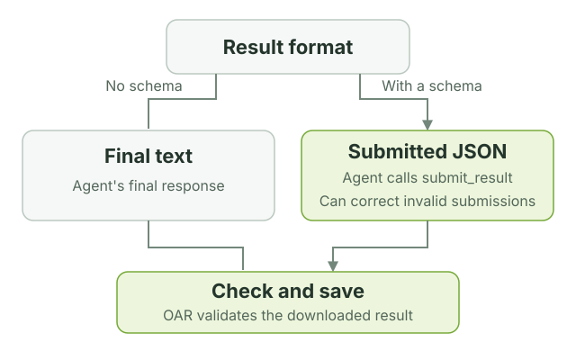

Customize profiles
Start with the folders created by oar init. They are ordinary files you can
edit and commit with your project. A profile defines lasting behavior; command
options supply the input, output, and context for one run.
Where to make a change
code-reviewer/
├── profile.yaml Tasks and the files each task uses
├── prompt-repository.md Instructions for this task
├── skills/ Reusable review guidance and rubric
├── schemas/review.json Required shape of the result
├── policy.yaml Sandbox file and network permissions
├── models.json Model definition
└── settings.json Selected model and thinking level
| What you want to change | Where to change it |
|---|---|
| This run's focus or context | --prompt-var on the command line |
| The instructions for every run | The task's prompt file |
| Shared judgment, conventions, or scoring | A skill's SKILL.md |
| Tasks, tools, or which skills are loaded | profile.yaml |
| What the sandbox can access | policy.yaml |
| The model | Keep the ID in models.json and settings.json in sync with your inference route |
| The result's JSON fields | The schema and the instructions that explain those fields |
How a task is defined
This is the shape of the packaged code review task, with shorter descriptions:
id: code-reviewer
description: Review a code repository.
sandbox:
policy: policy.yaml
tasks:
review-repository:
required_input: repository
prompt: prompt-repository.md
prompt_variables:
focus:
description: What deserves special attention.
default: Review the complete repository.
context:
description: Purpose and constraints.
default: No additional context was provided.
tools: [read, grep, find, ls, bash]
skills: [skills/review-code]
output_schema: schemas/review.json
Add another entry under tasks to define another job in the same profile. Each
task chooses its own prompt, variables, tools, skills, extensions, and output
schema. Set required_input to document for a file or repository for a
directory. Omit it for a task that does not accept --input.
Paths to prompts, skills, extensions, policies, and schemas are relative to the
profile directory and must stay inside it. OAR also requires models.json and
settings.json, which init supplies.
Put variables in a prompt
Use double braces to insert a value:
Review {{ oar.input_path }}.
Original name: {{ oar.input_name }}.
Focus: {{ focus }}
Context: {{ context }}
There are two sources of values:
| Variable | Supplied by |
|---|---|
oar.input_path |
OAR: the input's path inside the sandbox |
oar.input_name |
OAR: the original file or directory name |
focus, context, or another declared name |
The task's default, overridden by --prompt-var NAME=VALUE |
The two oar.* values are available only when the task declares
required_input. They cannot be overridden. They let the same document prompt
work with .md, .txt, and other filenames without hard-coding a path.
Declare each custom variable under prompt_variables in profile.yaml and use
it in the prompt. A variable with no default must be provided on the command
line. Names start with a lowercase letter and contain lowercase letters,
numbers, or underscores, up to 63 characters.
Repeat --prompt-var for multiple values. Values are non-empty strings;
there is no separate YAML variables input. Substitution inserts the text once,
literally: it does not evaluate expressions, loops, or nested placeholders.
OAR rejects unknown names, unused declarations, missing values, repeated CLI
assignments, and malformed placeholders before starting a sandbox.
Choose tools and skills
OAR runs Pi, the agent inside the sandbox. A task's tools list selects
which tools Pi may use: read, grep, find, ls, bash, edit, and write
are built in. A skill is a directory containing a SKILL.md with reusable
instructions; list the skills the task needs under skills.
For a custom tool, declare its extension file and tool name, then add the name
to the task's tools list. This fragment belongs under a task:
The extension file must exist and register that tool through Pi. OAR checks the
declarations locally and the registered tools before the first model request.
Tool selection controls the agent interface; policy.yaml controls sandbox
access, including commands run through bash.
Choose the result format
The result schema is a JSON file in your profile. Each task names the file
through output_schema in profile.yaml. For the included reviewers, oar init
copies schemas/review.json into the profile; you can edit it to change the
required fields, types, and bounds. OAR supplies the validation machinery.
{kind=link}

For a JSON task, OAR uploads a copy of that schema along with its built-in
submit_result tool. Tell the agent to finish by calling the tool. Invalid
submissions return errors so the agent can correct and resubmit. OAR downloads
the result and validates it against the profile's schema before replacing the
file at --output.
Omit output_schema to save the agent's final text response instead. The
--output option chooses only the destination. OAR still checks that the result
is non-empty and within the size limit. The
run lifecycle shows how both formats fit
into sandbox creation, execution, and cleanup.
Use JSON Schema Draft 2020-12 with inline definitions. References ($ref,
$dynamicRef, $recursiveRef) and regex keywords (pattern,
patternProperties) are rejected. Use types, enums, required fields, lengths,
and numeric bounds. format and custom keywords are annotations, not enforced
checks.
Check your changes
oar validate ./profiles/code-reviewer
oar run ./profiles/code-reviewer \
--task review-repository \
--input ./my-project \
--output ./code-review.json \
--dry-run
validate checks every task and its resources. --dry-run also checks the
selected task's input and variables and prints the planned commands. Neither
runs the agent. When both succeed, remove --dry-run to try the task.